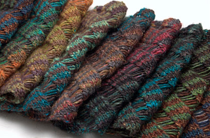
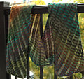
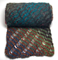

|
||
Premium Patterns Wintry Mix Mitts Love Bytes HawkeyeFree Patterns Kiddie Cadet Summerlin Ruffled Scarf Seamless DS Sock Simply Seamless Pouch Myriads of MushroomsExtras DIY Mitten Blocker Felt Patch Tutorial Yarn Dyeing Tutorial Needle Pouches Knitting Journal |
November 12, 2007 - Posted by Grace SchneblyGiving the Gift of Noro Project Specs I’ve been dieing to knit another Clapotis ever since I finished mine in June, so when my friend dropped a hint that she wanted a scarf for Christmas I immediately got to work. This is just one of those patterns you can knit over and over again and it doesn’t feel repetitive or boring at all. Admittedly I probably couldn’t knit one right after another, but definitely could do it every few months! I can totally understand why Staci has knit 10 of these (at least I think that is the current count). The pattern is extremely versatile since it looks great in just about every yarn and it’s so easy to change the width and length to suit your tastes. You could just as easily make a Clapotis scarf as a Clapotis throw. It is no wonder there are almost 3000 Clapotises on Ravelry right now. This Clapotis is about a third the width of the usual size, and it turned out to be a great scarf width. I know that a normal sized Clapotis can scrunch down into a scarf, but my friend would never use it as a wrap so there was no point in making it that wide. Blocking really helped it stretch out to the length I wanted, but it also lost most of its curl. However with blocking, the drape was improved dramatically plus I really like the way it looks with the dropped stitches all stretched out. I didn’t pin it out as it dried so it still has a bit of curl at the ends, and I think as it gets worn it will curl even more. I know a lot of people don’t like to wash and block their Clapotises, but I think it improves the overall look and feel. My favorite part of this scarf are the stripes! It kind of looks like a hybrid between a Clapotis and a Noro Striped Scarf. I did a 2x2 row stripe, alternating between colors #47 and #228. I used #228 for my first Clapotis, and actually used the leftovers for this project. I’m really happy with how the browns and grays in #47 worked with the bright, vibrant colors of #228, and they really grounded the whole scarf. Again I can’t say how much I love all the colorways of Silk Garden. It’s just so fun to watch them change as you knit, and it really helps keep things interesting. I did have to pick out some twigs and stuff as I knit, but after washing I don’t think it feels scratchy at all. I’d highly recommend that everyone makes at least one Silk Garden Clapotis, and right now is the perfect time since it is Norovember! This scarf will be going to the same friend that I made the Kolenya mitts for. I hope she doesn’t get too Noro-ed out when she sees her present! |
   Recent ReviewsRecent Posts
 Our Favorites
|
| © 2007 KathrynIvy.com | ||
{kind=link}
{kind=link}